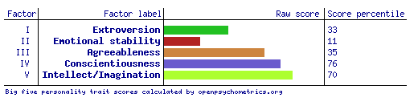

I was born in Poland and spend most of my life in Europe. I graduated as a Dental Technician in 2011 and I worked in the prosthetic laboratory for nearly three years. I moved to live in Australia in 2015. My native language is Polish and I speak fluent English. I am a student in the business pathway in Financial Planning at Open Universities Australia since last year. I am a big enthusiast of cooking, trying new dishes, experience various of flavours from different cultures, cuisines around the world. In a free time, I extend my knowledge about healthy lifestyle and read medical articles. I like to do some jogging occasionally and spend an active time outdoors with my friends and family.
Information Technology is incredibly diverse pathway, allowing to take my future business career in a vary of different directions. IT industry has a significant growth index in employment of graduated professionals and there is a promising trend in exposure to many interesting job opportunities offered in this specific area (Student Brands n.d.). I have chosen to study the Introduction to Information Technology at RMIT as it is one of the required subject to complete my Financial Planning degree. I believe that Introduction to Information Technology provide me with the foundation knowledge of contemporary technologies, software, applications and job skills required to enter the IT market (Open Universities Australia 2019). The most exciting part of this course is the practical application of the knowledge learn from the theoretical content and also get the chance to make things as a part of creative participant of IT project team. Currently I work as a project administrator of one of Melbourne’s company where is required to have a basic knowledge in the field of information technology and perform effectively in exchange of information processes with clients through different type of communication platforms. The opportunity to study IT will benefit my technological skills and allow me to implement them at work. As a result, my work performance on higher level enhance my chances to get a promotion and offering other attractive job opportunities.
As a full-time worker, I was not able to take up full time studying at the university. I have decided to study with Open Universities Australia (OUA) as a partner of RMIT University bringing the possibility to study online, anytime, anywhere. Offered opportunity will help me to graduate as a business professional with developed skills to achieve the financial planner qualifications (Open Universities Australia 2019). Moreover, I have decided to select RMIT University as my degree provider, because this university has a great global reputation and is ranked in the top 250 universities in the world in the 2017-18 QS World University Rankings (Royal Melbourne Institute of Technology 2019).
During my studies at RMIT I expect to gain the knowledge and analytical skills required in the financial planning area. I would like to develop the professional financial planning skills to provide effective financial advice related to investments and financial markets. As a graduate of this degree I want to be able to occupy role in funds management sector or any organisations helping to perform high level, critical analyse to formulate effective business decisions in the financial service sector (Open Universities Australia 2019).
My ideal job is on the position as a business rescue and insolvency strategist. This position is exceptionally appealing to me as allows to implement the theoretical and technical knowledge of business practice in diverse contexts gained during study at the university. This job opportunity is especially attractive to me as I would be engaged in consultation processes with business owners and clients in financial difficulties. The concept of possibility to prepare and present the best strategy for individual circumstances would be meaningful and rewarding on my career pathway.
Key focus to graduate of the Bachelor of Business (Financial Planning) at RMIT which is also accredited by the Financial Planning Association (FPA). As a graduate of this degree I will be able to provide the basic financial advice enabling my future clients to make professionally informed decisions. I will be prepared to deliver key accounting services with a clear understanding of financial statements. To enhance my chance on the competitive employment market I should apply for an assistant of business rescue and insolvency strategist role or volunteer job opportunity to get a realistic view of performed responsibilities required to perform my ideal job. I would also be able to integrate theoretical and technical skills in a range of economic and finance applications and contexts.
This trait determines how we interact with our environment. Anonymous Advocate is mostly Introverted. Introverted individuals prefer solitary activities and get exhausted by social interaction. They tend to be quite sensitive to external stimulation (e.g. sound, sight or smell) in general.
This trait shows where we direct our mental energy. Anonymous Advocate is mostly Intuitive. Intuitive individuals are very imaginative, open-minded and curious. They prefer novelty over stability and focus on hidden meanings and future possibilities.
This trait determines how we make decisions and cope with emotions. Anonymous Advocate is mostly Feeling. Feeling individuals are sensitive and emotionally expressive. They are more empathic and less competitive than Thinking types, and focus on social harmony and cooperation.
This trait reflects our approach to work, planning and decision-making. Anonymous Advocate is mostly Judging. Judging individuals are decisive, thorough and highly organized. They value clarity, predictability and closure, preferring structure and planning to spontaneity.
This trait underpins all others, showing how confident we are in our abilities and decisions. Anonymous Advocate is mostly Turbulent. Turbulent individuals are self-conscious and sensitive to stress. They are likely to experience a wide range of emotions and to be success-driven, perfectionistic and eager to improve.
If you are a visual learner, you learn by reading or seeing pictures. You understand and remember things by sight. You can picture what you are learning in your head, and you learn best by using methods that are primarily visual. You like to see what you are learning. As a visual learner, you are usually neat and clean. You often close your eyes to visualize or remember something, and you will find something to watch if you become bored. You may have difficulty with spoken directions and may be easily distracted by sounds. You are attracted to colour and to spoken language (like stories) that is rich in imagery. Here are some things that visual learners like you can do to learn better:
Remember that you need to see things, not just hear things, to learn well.
Results summary from the IPIP Big Five Factor Markers are in the table below. The table contains a raw score and also a percentile, what percent of other people who have taken this test that I score higher than.
The results of an online Myers-Briggs test explain that I am an Anonymous Advocate type of personality. Advocates tend to see helping others as their purpose in life. I share a unique combination of traits. As an Anonymous Advocate I am mostly introverted and get exhausted by social interaction. I am an intuitive person with good imagination and curiosity. As a Feeling individual I am emotionally expressive, more empathic and less competitive than Thinking types. My key focus is on organisation cooperation. I am also decisive and highly organized valuing clarity and predictability. Results explain that I prefer structure and planning to spontaneity. My weaknesses as a Turbulent individual are self-conscious and emotional. I am success-driven personality, perfectionistic and eager to improve. The results of an online learning style test tell that I am mostly visual learner, however I should also take in consideration and implement the tactile and auditory learning techniques to achieve the satisfactory studying results. In general, I learn by reading or seeing images and I understand and remember things by sight. The results of an online Big Five Personality test show that I am characterising by strong conscientiousness, which means that I am careful and diligent. I have been also classified as a person who is open to experience with impressive intellect and imagination skills.
These results will significantly influence knowledge about my social, workplace behaviour, my strengths and weaknesses and allow to focus on implementing appropriate learning techniques to improve the studying process. My personal profile will value and positively affect my team which should be strongly taken into account when forming a group. I believe that I would be an asset to my future study group or work organisation as I am willing to help others, have a lot of empathy. My main focus is on creating a harmony and an effective communication between the organisation members.
This web application is meant to crumble all numbers provided of an anticipated property purchase and provide the end-user with a detailed analysis of projected costs from start to end, covering costs implied from a conveyancer and buyer’s agent, initial acquisition and renovation costs, maintenance and insurance as well as tax implications. Supported by intuitive, visual representations in the form of bar charts and line graphs, valuable predictions are rendered.
With a plethora of real estate related analysis applications and home loan focused calculators already available on the internet, none of them combine all information, data and figures into one big picture. While the property acquisition process by itself is time consuming and requires due diligence to be done by the buyer themselves, this web application project aims at taking a huge burden of this process by assisting the buyer in finding a well-thought decision. Whether determining affordability in the long term or a cost comparison of buying versus renting, this application is a one stop to cover them all.
The user facing part of the web application consists of two key pillars that are driving the whole user experience, firstly an input form which captures all information of the buyers financial situation and anticipated property, and secondly the analysis results. All required input data are numbers in the form of dollar amounts, percentages or date figures and can be entered into the form by either typing them out or using a graphical control element, i.e. slider to interact and manipulate the data. To provide clarity about each data field required, a detailed description can be displayed in the form of a pop up notification if the user clicks on a question mark symbol next to the field name. During data entry each field is validated for realistic and reasonable input data, to avoid typing error by the user. A notification next to the field in question is displayed after validation to visibly inform the user of its provided value and to question it’s intention, drawing the users attention to verify the data. Having filled out all input fields, a submit form button can be clicked by the user which will start the analysis routine. Upon success, the user will be forwarded to a dedicated results page, which summarizes all input data and presents the analysis result. The analysis results view is meant to be read and interpreted by the end user in a very intuitive and self-explanatory manner. Aside from graphical visualization with bar charts and line graphs of the predicted data flow, the user receives valuable assistance by also providing text based interpretation of some of the calculated outcomes. An example shall be that based on the user’s circumstances and provided data, he could save a certain amount of dollar paid in interest over the lifetime of his loan entering into the home loan with a higher deposit amount of just a certain dollar figure, which in turn could be saved within one year by reducing living expenses of another dollar figure peer week. This form of visualized and text based feedback of the analysis result actively encourages the user to think of all potential edges and corners involved in the costing process. In order to allow the user to conveniently make adjustments to the previously provided input data without needing to return to the form page, the form can be viewed on the analysis page by clicking on a pull down button. The analysis results are updated in real time while the user adjusts data or drags sliders to increase or decrease figures. After all the user can then decide to email these results to a desired address or even export them as pdf or Excel spreadsheet. One key element of the web application in order to reach self-sustainability of covering running costs or eventually making small profits, discreetly placed online advertisements related to real estate are embedded on various spots on all pages. User experience is in focus and thus no use of distractive or overlapping popup advertisement is made.
The web application itself can be developed and tested with free, open source software available on the internet and does not incur additional licensing costs. A very popular and swift to learn programming language is Python which combined with Pandas, a data analysis library (Pandas 2019), form a feature rich basis to analyse data and plot them into visual graphs. Costing let alone are incurred by hosting the web application, cost effectively on cloud services. To make the application reachable on the internet, a domain name and additionally website security certificate need to be acquired.
Having chosen Python as the basis, which is considered the fastest-growing major programming language (Stackoverflow 2017), an application developer shall be found with ease. However, an additional requirement is proficiency in data analysis using Pandas and knowledge in using Flask, a lightweight web application framework (Palletsprojects n.d.) for Python. All resources and documentation are freely accessible on the internet. Web services such as Amazon’s Lightsail (Amazon Web Services 2019) allow for a cost-effective setup of the web application without requiring in-depth knowledge or skills.
With the project’s success potential real estate buyers will experience a noticeable cut-down of time invested in research and data comparison, in particular in the form of creating manual spreadsheets and doing the math themselves. A major advantage in using the web application for the buyer is to make sure that all costing aspects, in particular of predictable costs, are covered, easing the decision-making process and more importantly, avoiding the buyer to default on loan. Most importantly this application eases the process for first home buyers to step into the market.